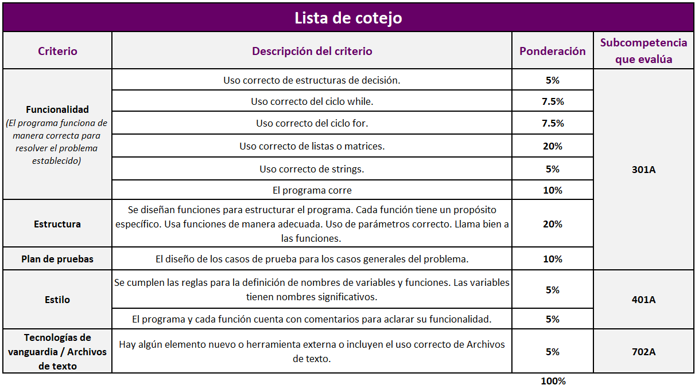

TC 1028. Pensamiento Computacional para Ingeniería
. |
Actividad: Proyecto integrador
 Instrucciones
Instrucciones
- Incorpora a tu proyecto strings. Retoma el tema que seleccionaste y expande tu
proyecto para que incluya el manejo de cadenas de caracteres. Puedes
modificar partes anteriores del código para proveer interfaces más usables y
personales, o incorporar nueva funcionalidad.
- En este programa se checa a detalle que
cumplas con las reglas de estilo, estructura, funcionalidad y pruebas.
- Los casos de prueba deben de estar
documentados correctamente en los comentarios.
- Coloca en comentarios al inicio de tu programa la
descripción general de tu proyecto.
- Explica en comentarios qué es lo que hace cada
función, con el fin de aclarar su funcionalidad.
 Rúbrica de evaluación de competencias
Rúbrica de evaluación de competencias

 Especificaciones de entrega
Especificaciones de entrega
Entregables:
- Archivo en Python. Guarda tu proyecto con el nombre:
PF_Matrícula.py.
- Los archivos de texto que requiera
su proyecto (en caso de que requiera de la utilización de algún archivo de
texto).
- Video: Realizar un video donde se
explique el código de su proyecto con duración máxima de dos minutos.
Guarda tu video con el nombre: video_matricula.
- Explicar el código realizado, los retos que les
implicó, problemas y cómo los solucionaron.
- Explicar cómo incorporaron en su proyecto
condicionales, ciclos, listas anidadas, matrices y strings.
- COLOCAR EN UNA CARPETA
PF_MATRICULA LOS ARCHIVOS ANTERIORES,
COMPACTAR LA CARPETA EN UN ARCHIVO ZIP Y SUBIR EL ARCHIVO COMPRIMIDO A
CANVAS (PF_MATRICULA.ZIP).
Instrucciones para enviar tus archivos por Canvas:
-
Haz clic en el botón de
Modulos.
-
Haz clic en la actividad de
Proyecto Integrador.
-
Haz clic en el botón de
Entregar tarea.
-
En el fólder de
Carga del archivo, haz clic en el botón de
Examinar y localiza el archivo en Python con extensión
PF_Matrícula.py. y realizas el mismo procedimiento para subir
el video_matricula.
-
Cuando hayas terminado de subir tus archivos, haz clic en el botón de
Entregar tarea y listo!!